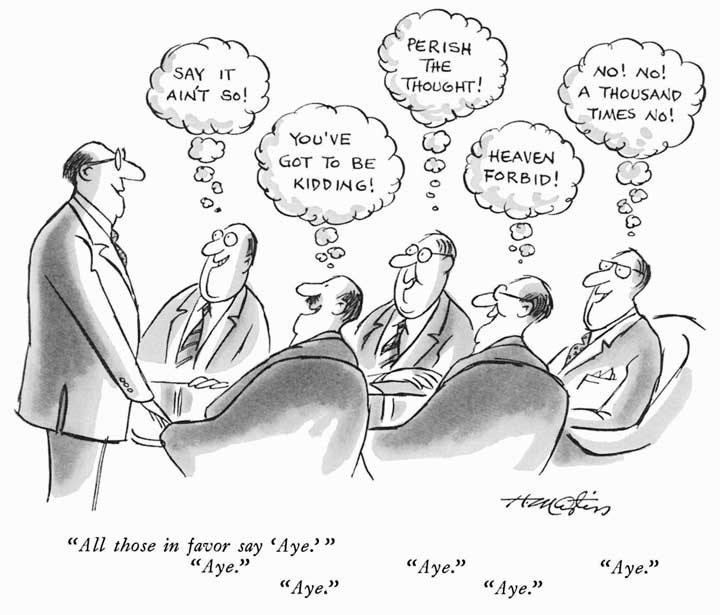

[브레인 스토밍: 무조껀 찬성해주기?]
브레인스토밍(Brainstorming)은 이미 널리 알려진 회의 기법이다.
이 기법의 가장 중요한 규칙은 바로
"어떠한 아이디어라도 반대/비난 해서는 안된다"
라는 것이다.
브레인스토밍은 창의적인 아이디어를 이끌어내는데 탁월하다고 알려져 있다.
그래서 많은 관리자들은 아이디어 회의를 브레인스토밍으로 진행하려고 시도한다.
자. 여기까지는 모두가 알고 있던 내용이다.
그래서 뭐?
아이디어가 필요할 때 브레인스토밍을 하자고?
맞다.
당신이 관리자라면.
하지만. 당신이 피관리자. 즉, 아이디어를 내야 하는 사람이라면?
--
다시 한 번 되짚어 보자.
브레인스토밍은
'반대와 비난이 회의 참석자들의 유용한 아이디어를 막는다'
라는 것을 전제로 실행하는 기법이다.
목적은
'참석자들로부터 창의적인 아이디어를 이끌어 내는 것'
이것을 시도하는 주체는
'관리자' 혹은 '회의 주최자'
이거다.
아이디어를 이끌어내고 싶어하는 사람은 바로 '관리자' 인 거다.
'반대와 비난이 회의 참석자들의 유용한 아이디어를 막는다'
라는 좋은 정보를 왜 관리자들만 이용하고 있는것일까?
--
피관리자. 즉, 회의 참석자들은 이 정보를 어떻게 이용할 수 있을까?
가장 쉬운 방법은 관리자에게 '브레인스토밍을 합시다' 라고 건의하는 것이다.
그리고 스스로는 참석자가 되어서 반대와 비난 없이 아이디어를 내는 거다.
혹시 이 정도만 생각해 왔다면 당신은 죽 쒀서 개 준 꼴이 될 수도 있다.
브레인스토밍에서 누군가는 획기적이고 참신한 아이디어를 내서 숨은 잠재력을 인정받을 것이고
누군가는 여전히 할 말이 없어서 '그거 좋네요' 만 연발할 것이기 때문이다.
다시 한 번 생각해보자.
'반대와 비난이 회의 참석자들의 유용한 아이디어를 막는다'
여기서 '관리자/주최자' 가 나라면
반대와 비난을 저지하기 위해 '브레인스토밍' 을 진행하면 된다.
여기서 '참석자' 가 바로 나라면.
나는 대체 무엇을 해야 하는가?
'반대와 비난을 겁내지 말고 아이디어를 내야한다'
왜냐고?
관리자가 '용기 있는 참석자' 와 '용기 없는 참석자'를 모두 수용하기 위해 노력하고 있다면. 그는 능력 있는 관리자다.
그렇다면 능력 있는 참석자란 어떤 사람인가?
'능력 있는 관리자' 와 '능력 없는 관리자'를 모두 수용하려고 노력하는 사람일 것이다.
그 노력이 바로
'반대와 비난을 겁내지 말고 아이디어를 낸다'
라는 것이다.
--
브레인스토밍은 유용한 회의 방식이다.
하지만 '브레인스토밍 없이는 아이디어를 낼 수 없는 사람' 이 되지는 말자.
그것은 또 하나의 '환경 탓' 이 될 뿐이다.
반대로 '브레인스토밍' 의 숨은 의미를 깨닫는다면
당신은 어떠한 아이디어 회의에서도 돋보이는 사람이 될 수 있다.